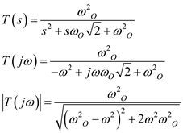
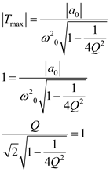

Step 1:
Refer to Figure 16.16(a) in the textbook for the |T| characteristics and S-plane singularities of second order Low pass filter.
For second order low pass filter, the transfer function is,

The value of ,
The maximum attenuation allowed in the pass band is,  .
.
The value of .
Step 2:
Step 3:
There are many Q-values which may be used. Consider the second order low pass filter characteristics as shown in Figure 1.
Step 4:
From Figure 1, for  , there is no peaking and for there is a peak in the above characteristics. For , the response is maximally flat. So, use
, there is no peaking and for there is a peak in the above characteristics. For , the response is maximally flat. So, use  which is desirable.
which is desirable.
Case1:
For , the response is maximally flat.
The transfer function of the second order filter is,
Step 5:
Now the transfer function is,

Step 6:
Simplify further.
Thus, the values of  and
and  are,
are,
For , the transfer function is,
Hence, the transfer function of the second order low pass filter for is,
.
Step 7:
Case2:
The dc transfer function is,
Step 8:
The maximum transmission is,

Simplify further.
Solve the equation to obtain the value of as follows:
Now, calculate  .
.
Since,  should obey the condition , the value of
should obey the condition , the value of  is,
is,
Step 9:
Now at the passband edge, the transfer gain is,
Consider the transfer function.
Step 10:
Substitute 1 for  in the equation.
in the equation.
Simplify further.
Simplify further.

Thus, the value of is,
Step 11:
Therefore, the transfer function is,

Step 12:
Consider the transfer function .
Step 13:
If

, the transfer function is,
Calculate the value in dB.
Thus, the value of in case 1 is .
Step 14:
Consider the transfer function .
If  , the transfer function is,
, the transfer function is,
Calculate the value in dB.
Thus, the value of  in case 2 is .
in case 2 is .